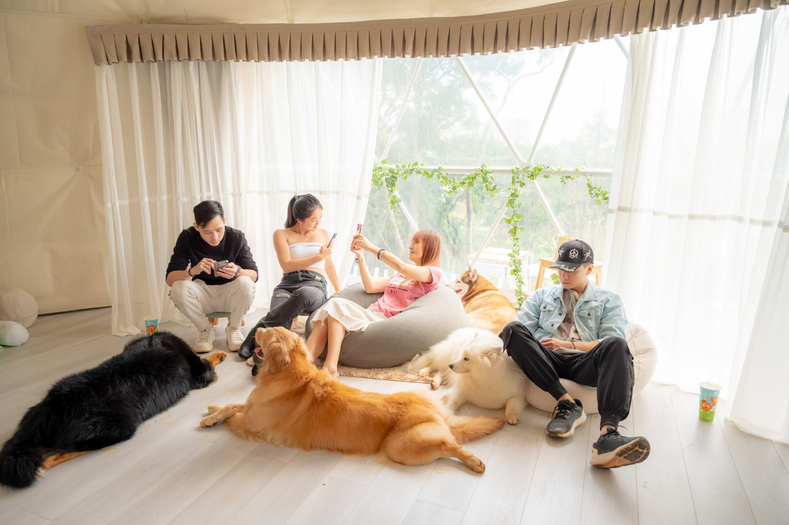

室內冷氣＋戶外草地，聚會不只有一張餐桌
一般餐廳比較適合吃飯，但不一定適合聊天、活動、拍照或讓孩子與毛孩放鬆。Joyforest 的特色是室內與戶外可以一起使用，白天可以在草地拍照、野餐、烤肉，晚上可以搭配燈光、投影或夜間氣氛活動。室內帳篷則適合吹冷氣、唱歌、玩遊戲、放東西與休息。
空間與氛圍
森林系場景
草地、樹木、生活感佈景與拍照背景，適合輕鬆聊天與自然互動。
自主包場
不與陌生人共用空間；流程自己安排，場地提供基本桌椅與使用說明。
方案與費用（摘要）
| 方案 | 費用 | 說明 |
|---|---|---|
| 純場地使用 | 4 小時 NT$6,800 | 不含攝影服務；適合 20 人內輕鬆聚會。 |
| 加購｜活動拍照 | NT$4,800 | 活動紀錄拍攝（照片全給，含基本調色）。 |
| 加購｜照片＋短片 | NT$8,800 | 照片＋微電影短片（依流程安排）。 |




小提醒
若需雨備/加時，請於預約時一併告知。
相關關鍵字
#生日派對 #生日包場 #朋友聚會 #聚會場地 #桃園聚會場地 #中壢聚會 #楊梅聚會 #小型派對場地 #森林派對 #草地派對 #夜間聚會 #包場聚餐 #戶外聚會 #生日聚餐 #活動包場